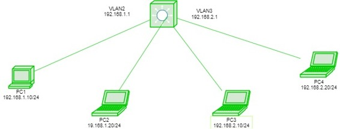

Prerequisite – Access and trunk ports
Normally, Routers are used to divide broadcast domain and switches (at layer 2) Operates in a single broadcast domain but Switches can also divide broadcast domain by using the concept of VLAN (Virtual LAN).
Vlan is logical grouping of devices in same or different broadcast domain. By default, all the switch ports are in Vlan 1. As the single broadcast domain is divided into multiple broadcast domains, Routers or layer 3 switches are used for intercommunication between the different Vlans.The process of intercommunication of the different Vlans is known as Inter Vlan Routing (IVR).
Suppose we have made 2 logical group of devices (vlan) named sales and finance.If a device in sales department wants to communicate with a device in finance department, inter Vlan routing has to be performed. These can be performed by either router or layer 3 switches.
Switch Virtual Interface (SVI) –
SVI is a logical interface on a multilayer switch which provides layer 3 processing for packets to all switch ports associated with that VLAN.A single SVI can be created for a Vlan. SVI for layer 3 switch provides both management and routing services while SVI on layer 2 switch provides only management services like creating vlans or telnet/SSH services.
Process of Inter Vlan Routing by Layer 3 Switch –
The SVI created for the respective Vlan acts a default gateway for that Vlan just like the sub-interface of the router (in the process of Router On a stick). If the packet is to be delivered to different vlan i.e inter Vlan Routing is to be performed on layer 3 switch then first the packet is delivered to layer 3 switch and then to destination just like in the process of router on a stick.
Configuration –

Here is a topology in which we have a layer 3 switch connected to host devices namely PC1, PC2, PC3, PC4. The hosts PC1, PC2 will be in Vlan 10 and PC3, PC4 will be in Vlan 20. Giving IP address to All hosts. PC1-192.168.1.10/24, PC2-192.168.1.20/24, PC3 – 192.168.2.10/24, PC4-192.168.2.20/24.
Now creating vlans on layer 3 switch namely vlan 2 on the switch ports fa0/1, 2 and fa0/3, 4 for vlan 3.
Switch# vlan 2 Switch# vlan 3 Switch# int range fa0/1-2 Switch# switchport access vlan 2 Switch# int range fa0/3-4 Switch# switchport access vlan 3
Now creating SVI for vlan 2 giving it IP address 192.168.1.1/24 and SVI for vlan 3 giving IP address 192.168.2.1/24
Switch# ip routing Switch# int vlan 2 Switch# ip address 192.168.1.1 255.255.255.0 Switch# int vlan 3 Switch# ip address 192.168.2.1 255.255.255.0
Now if we will try to ping PC1 to PC4.
The packet is first delivered to switch then to the destination. As the destination is present in other networks, the packet will be first delivered to switch which has a SVI for both vlans (acts as gateway).
Advantages –
In Router on a stick method, both switch and router are needed but while using layer 3 switch, a single switch will perform inter-vlan routing as well as the layer 2 functions (Vlan), therefore this method is cost effective and also less configuration is needed.